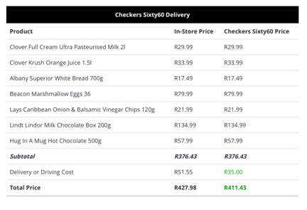

The term Data Visualisation is known for its “connection between data and computer technology to transform data into a visual or sonic form.” (Li 2020) This meaning can help identify a relationship between unprocessed data and technology, whereby technology is used to transform unprocessed and raw data into processed information shown in a visual form that can be easily interpreted and understood. From this understanding of data visualisations, we can contemplate the roles of the graphical representation of information and data in web development. By investigating the forms and perception of data visualisation based on the work of Li Qi of 'Overview of Data Visualization' in Embodying Data, this blog post will attempt to justify whether data visualisation has an essential role in web development.
To understand data visualisation we first need to evaluate the different forms of data. There are two forms of data. The first is primary data, which refers to information collected directly from the researcher themselves (Benedictine University 2023), uses they collect the data through methods like surveys, interviews, and focus groups. The primary data is raw, unprocessed information, which can be both qualitative, such as interviews that provide insights into individual's experiences, and it can also be quantitative, controlled experiments or surveys. (Benedictine University 2023) The primary form of data shows the specific need of the data while validating its relevance and accuracy. For instance, If we were to survey a group of individuals on whether is it worth going in-store to buy groceries or order online and how many people switch. We can use the data from the gathered surveys to display how many people switch to buying groceries online and data we can check pricing to evaluate whether it’s worth going in-store or going online. Seen in the below table data visualisation of price comparison of using checker60 or going in-store.
Another form of data is secondary data, which refers to data that has already been collected by someone else for a different purpose. Secondary data is used to save time and money, as well as to gain access to data that might be too large or complex to gather personally. (Benedictine University 2023) Secondary data may be gathered in a different form from primary data but it is still visualised in the same aspect as it is put into data visuals. The relationship between primary and secondary data and data visualisation is seen in the processing of the data as it is a tool to aid in the analysis of the data. Therefore, these forms of data are the information that is visualized in data visualization, helping researchers, and decision-makers to understand the data and make informed decisions and draw conclusions based on it on what can be seen in its visual form.
Furthermore, understanding these forms of data allows for the use of visualisation techniques. Data visualisation is also known as visualisation techniques which create different effects in understanding the data to aid in identifying problems and issues. In web development, data visualisations have become more diverse and complex over the year, as developers need to understand and know how to apply the principles and techniques of data visualisation in projects, which aids in decision-making while creating a user-friendly experience, it has progressed further than merely creating aesthetically pleasing elements, making data more meaningful and useful. Even with the creation of JavaScript libraries such as D3.js, Chart.js, and Highcharts, which are tools which have made it more accessible for the creation of intricate and dynamic data visualizations, web developers still need an understanding of data visualisation. This is because there are numerous forms of visualisation techniques but the most common and traditional are Tables, Charts, Trees, Maps, Scatter-plots, Diagrams, Graphs, Simulations, Waveforms, and Volume. (Li 2020) Each and everyone one of these forms of visualisation offers unique ways to there leveraging visual elements to rather tell a story, making the data and information more understandable and engaging, making it important as the users will remember the data.
This is mainly because, in web development, data visualisation is multifunctional. It can aid in monitoring real-time data (Stevens 2021), a line graph could be used to present how the value of a currency changed over a certain period or reveal patterns and trends in datasets (Stevens 2021), using a histogram to show the number of users per month. There are multiple ways in which developers can use data visualisation to enhance a user's engagement and retention on a website. This is an indication that data visualisation is important in understanding users so that they can come back.
Therefore, after careful analysis of the research discussed, we have found that data visualisation plays an essential role in web development; as it's about making data more clear and actionable. Because of the increasing amount of data in every aspect of our lives, it's expected that data visualization will continue to be a crucial skill for web developers, as it allows for ways in which we can understand and interact with data.
Bibliography
• Benedictine University. 2023. Benedictine University Library. Public Health Research Guide: Primary & Secondary Data Definitions. Online. https://researchguides.ben.edu/c.php?g=282050&p=4036581#:~:text=Primary%20Data%3A%20Data%20that%20has,the%20research%20problem%20at%20hand. 29/07/2023.
• Steyn, W. 2022. MYBROADBAND. Checkers' "cheaper to use Sixty60" claim tested. Online. https://mybroadband.co.za/news/business/440124-checkers-cheaper-to-use-sixty60-claim-tested.html. 29/07/2023.
• Stevens, E. 2021. CAREERFOUNDRY. What Is Data Visualization and Why Is It Important? A Complete Introduction. Online. https://careerfoundry.com/en/blog/data-analytics/what-is-data-visualization/. 30/07/2023.
• Li, Q. 2020. Chapter 2: Overview of Data Visualization. Embodying Data. Springer Singapore. pp. 17- 47.